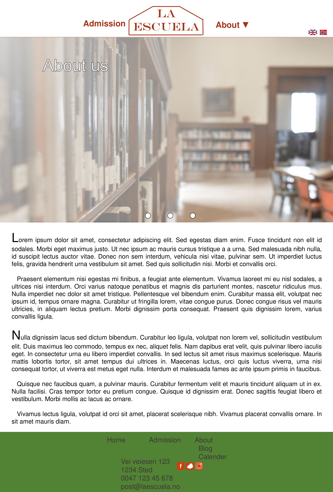
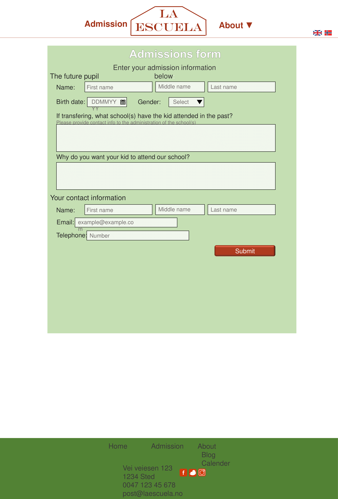
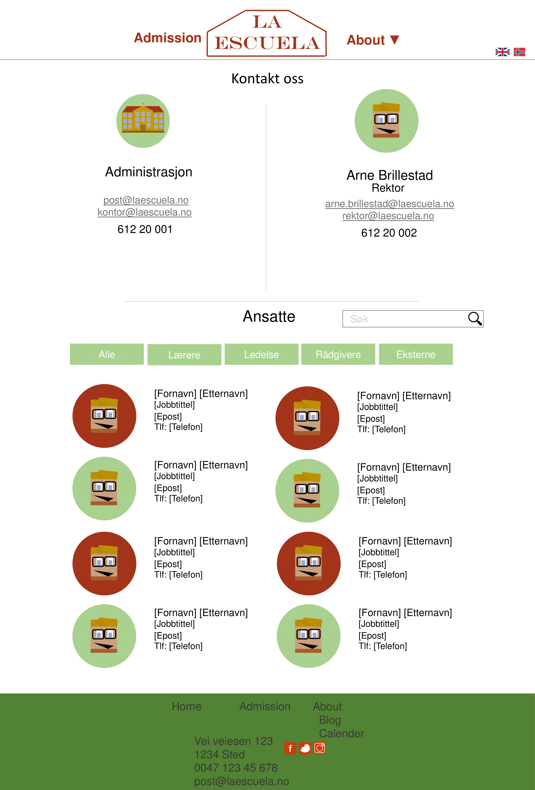
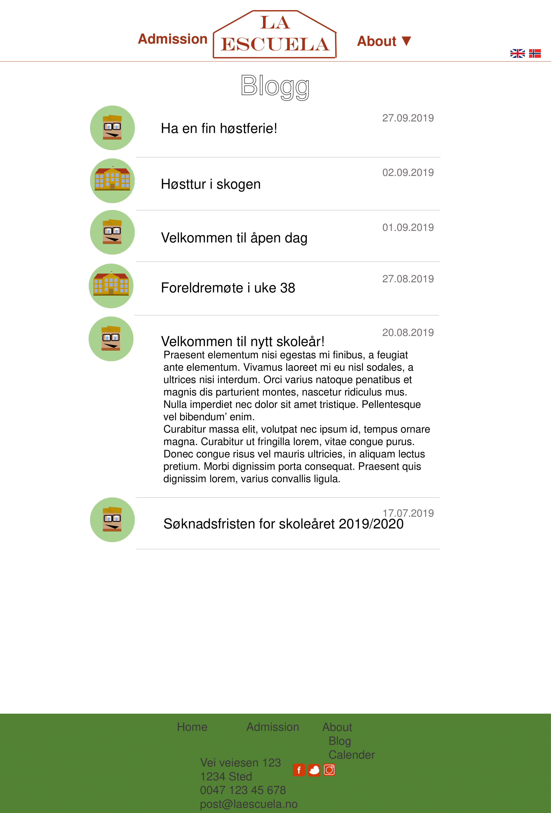
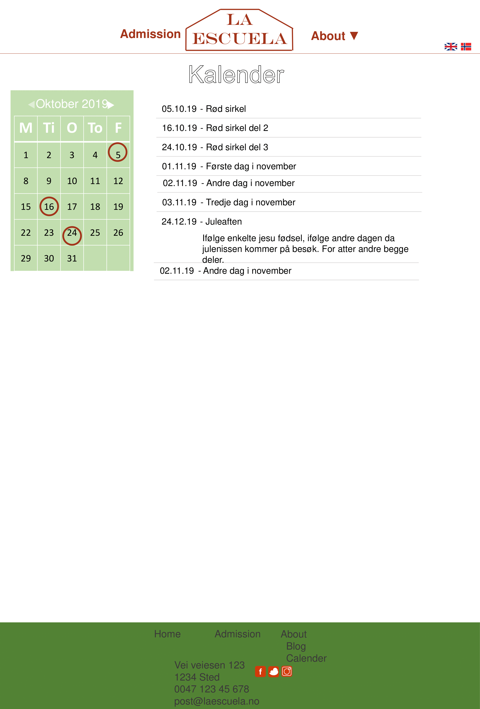

School - Website
Date: September 20th 2019
Authors:
- Jens Georg Berg-Jensen
- Robert Nicolai William Balfour
- Anna Bakkebø
- Endre Sørmo Rundsveen
Our client: La Escuela
Our client, Arne Brillestad, is the headmaster at La Escuela. La Escuela is a private elementary school in
Norway.
The school has creativity and sustainability as their main focuses.
Purpose and goals
The website will function as the main information hub from the school to its
users. The parents will here be able to retrieve important information about the school as well as be able to
apply for their children to attend the school.
Audience
The website is aimed mainly towards parents of current or future pupils. Pupils can also use the site, but it
will mostly be directed towards the parents. Parents often have a need to get information about what their
children
are doing every day. The children often get information at school, but forget to tell their parents. This
website
will therefore be able to fill that need for information for the parents.
Navigation structure
The navigation structure of La Escuela's website can be described as a clique, as all the webpages are linked to
each other. This can be seen visually in the picture below. Every page has a navigation bar and a footer, where
it is possible to access all of the pages included in the website.
We chose to have a clique structure to make the content of the website as accessible as possible
and to make the user aware of the general structure and content of the website, without having to displaying it
all.
The user can easily access any another page at any given time, giving the user as much freedom as possible
within the website.
Page layout and appearance
Font
Font type: Arial
Font sizes:
- h1: 30px
- h2: 24px
- h3: 22px
- h4-h6: 20px
- p: 18px
Font colors:
- General text: RGB - 59,56,56
- Navigation bar: RGB - 164,52,26
Color scheme
-
Background - RGBA - 242,242,242,50%
-
Background some items: RGB - 169,209,142
-
Footer: RGB - 84,130,53
-
Social media icons: RGB - 255,255,255 (white)
-
Links not clicked: RGB - 64,64,64
Links clicked: RGB - 0,0,0
Navigation bar
The navigation bar will be available on all the pages of the website. It will be sticky, meaning it will always
at the top of the screen. When clicking the about button it will open a menu below the navigation bar. This menu
will not be sticky.
Footer
The footer will be on the bottom of the page. If the page isn't filled with content the footer will be at the
bottom of the page. If it is filled with content the footer will be pushed below the content. The footer will
contain contact information and links to the different parts of the website.
Fulfillment of goals
With having the navigation bar available on all pages it becomes easy to navigate through the different parts of
the website.
With having both the text and the links grey or black it projects some sence of maturity from the school.
We wanted this because the audience are the parents of the children and might be looking for a serious school
that is mature and knows how to relate to parents, as well as children.
Content
-
Homepage - index.html
The homepage will be the first page that the users will see. The page will contain a slideshow at the top
that displays pictures which showcases the facilities and goals of the school. On the left side of the page,
under the slideshow, there will be a couple of paragraphs of the major news of the school, with a picture of
either the principal or the school, depending on who wrote the news. On the right side of the page there
will be a calendar.

-
About - about/index.html
The About page will have a slideshow of pictures (same as on index.html), and beneath have the general
information about the school, and beneath with a list of different services that the school provides

-
Admission - admission/index.html
The admission page will have a applying-form where there will be a possibility of applying to the school. that users can fill in information concerning an application for the
The form will ask for relevant information for applying.

-
Contact - about/contact.html
On the top of the page the contact information for the school and the principal will be shown. Beneath this,
there will be a searchable list of employees at the school. The list of employees will have a picture on the
left, with the contact information on the right.

-
Blog - about/blog.html
The blog will have information and reports of events that happen at the school, or articles that are
interesting to read, sorted by date. The list items will have a picture of either the school or the
principal, depending on who wrote the post.

-
Calendar - about/calendar.html
Here all the events for the school will be posted. On the left side of the page, the same calendar as on the
index.html page will be shown, with important dates circled. To the right, the events will be shown in a
list, sorted by date.

Requirements
-
Dropdown menu
- There will be a dropdown menu when the user clicks on about or the arrow next to about.
-
On this dropdown menu the user will be able to choose between the pages: about.html, contact.html,
blog.html and calendar.html
Here contact, blog and calendar are subpages of the about webpage
-
Slideshow for images on homepage and about page
-
On the homepage and the about page there will be an image just below the header, as shown on the
mockup. We want this to be a slideshow of images that changes automatically.
-
Application on the admission page
-
On the admission page there will be an application that the parents can fill out when wanting to
apply for their children to attend this school.
- Calendar on homepage
- On the homepage there will be a calendar that retrievs events from the calendar page.
- On the homepage there will be the main events and the information will be short and precise.
-
To get more information the user can got to the calendar page where there will be more information
about the different events
-
Information on the homepage
-
On the homepage there will be the latest news or blogs posted. This will be just the first part of
the post. The user will be able to click on the post to read the whole post
-
Here we need a script that retrieves the first x chars or words from the three latest blog post.
Plan
List of files and folders
- index.html
-
about/
- index.html
- blog.html
- calendar.html
- contact.html
-
admission/index.html
-
img/
- logo.svg
- icon.png
- picture_1.png
- picture_2.png
- ...
- picture_10.png
- principal.png
- school.png
- employee_1.png
- employee_2.png
- ...
- employee_20.png
-
script/
- navBar.js
- footer.js
- application.js
- infoGet.js
- languageChange.js
- slideshow.js
- calendar.js
- contact.js
-
styling/
- navBar.css
- styling.css
- footer.css
Work division and deadlines
| Filename |
Description |
In charge |
Deadline |
| index.html |
The homepage |
Anna |
05.11.2019 |
| about/index.html |
Information about the school |
Anna |
05.11.2019 |
| about/blog.html |
Interesting and relevant articles for the user |
Jens |
05.11.2019 |
| about/calendar.html |
|
Endre |
05.11.2019 |
| about/contact.html |
Page with contact information of the different employees of the school. |
Anna |
05.11.2019 |
| admission/index.html |
Admission page with the possibility of sending an application to the school |
Robert |
05.11.2019 |
| logo.svg |
|
Endre |
12.10.2019 |
| icon.png |
|
Endre |
12.10.2019 |
| Image management |
Making all images organized with correct size and properties |
Jens |
01.11.2019 |
| navBar.js |
|
Endre |
12.10.2019 |
| footer.js |
Functionality for the footer |
Anna |
01.11.2019 |
| application.js |
Functionality for using the application scheme |
Robert |
01.11.2019 |
| infoGet.js |
Functionality for getting information |
Jens |
01.11.2019 |
| languageChange.js |
Functionality for changing the language between english and norwegian |
Robert |
01.11.2019 |
| slideshow.js |
Functionality for the slideshow |
Jens |
01.11.2019 |
| calendar.js |
|
Endre |
01.11.2019 |
| contact.js |
Functionality for choosing different groups of employees and possibility to search for different
employees
|
Anna |
01.11.2019 |
| navBar.css |
Styling of the navigation bar |
Endre |
12.10.2019 |
| styling.css |
General styling for the whole website |
All |
05.11.2019 |
| footer.css |
Styling of the footer |
Anna |
01.11.2019 |
| Final controls |
|
All |
10.11.2019 |